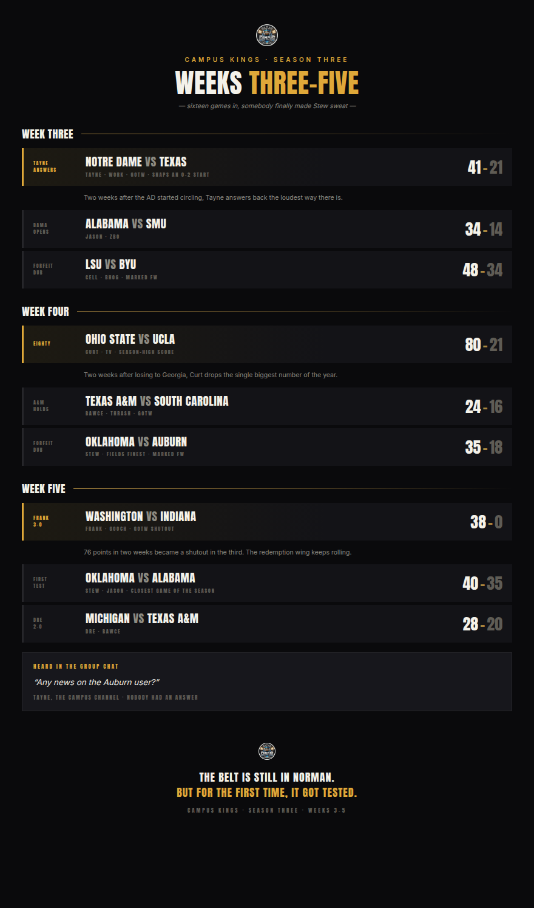

Alabama makes Stew sweat, Curt drops 80 on UCLA, and Tayne answers an 0-2 start the loudest way there is.

Three weeks, sixteen games, and the first real dent in the three-peat bid. Ohio State dropped eighty on somebody. BYU is a stat sheet full of losses. Notre Dame answered the bell it got knocked down by two weeks ago. Let's get into it.
Oklahoma 40, Alabama 35. Everyone else Stew has played this season either got shut out or forfeited. Jason's Alabama did neither — Bama came into Norman fresh off a 34-14 win over SMU and left down five, the first team all year to hang 35 on the champ. Stew is 3-0 and still holds the belt, but this is the first Oklahoma box score that looks like a football game instead of a bulletin.
The rest of the resume is padded: 35-18 over a CPU-run Auburn in Week 4, a forfeit that has Tayne asking in the group chat, unanswered, "Any news on the Auburn user?" Nobody had one.
Ohio State 80, UCLA 21. Two weeks after Georgia beat him 35-31, Curt turned around and hung the single largest score of the season on TV's UCLA. Eighty points, a 59-point margin, and a Buckeyes offense that looks nothing like the team that lost the week before. UCLA has now been outscored 125-53 across its last two appearances.
We told you three weeks ago that Frank's Washington was answering the disrespect from the final Season Two board. He's made it a habit. Washington 38, Indiana 0 was the Week 5 Game of the Week — a shutout that pushes Frank to 3-0, with wins over Florida State, UCLA, and now Gooch's Indiana without giving up a point in the finale. Seventy-six points through two weeks turned into a complete defensive statement in the third.
He's got company at the top of the standings: Georgia, Arizona State, Michigan, and Penn State are all 2-0 across this stretch, and Oregon quietly won two more without anybody noticing — same as always.
Two weeks ago Notre Dame was 0-2 and the AD was circling. Notre Dame 41, Texas 21 — the Week 3 Game of the Week — is the response. Tayne outscored Work by 20, snapped the skid, and heads into the back half of the season 1-2 instead of buried.
The other marquee game of the stretch: Texas A&M 24, South Carolina 16, Bawce's Week 4 GOTW win, got answered right back a week later when Dre's Michigan beat him 28-20. A&M split the fortnight.
BYU is 0-4. Losses to SMU, LSU, Ole Miss, and Arizona State, by a combined 163-88, and the closest of the four — 37-28 to TBO in Week 5 — is the good news. Bhog's LSU loss came marked as a forfeit on LSU's side of the ledger, which means even the games he didn't lose on the field, he still lost.
Baylor's not far behind. Cozy dropped a forfeit to Texas Tech in Week 5 to fall to 0-2 across this window, on top of the 35-10 loss to Oregon back in Week 2.
Polo's Florida beat LSU 35-23 to bounce back from the Michigan blowout. Georgia held serve over Florida State, 27-14. Arizona State beat Texas Tech 48-31 before closing out BYU. And JT's first game in the building — taking over Nebraska from Jarvis — was a 42-21 loss to Penn State. Welcome to the league.
Sixteen games in three weeks, and the belt is still in Norman — but for the first time all season, somebody made Stew sweat for it. Everybody else is still playing catch-up. Next advance, more film.
{kind=link}